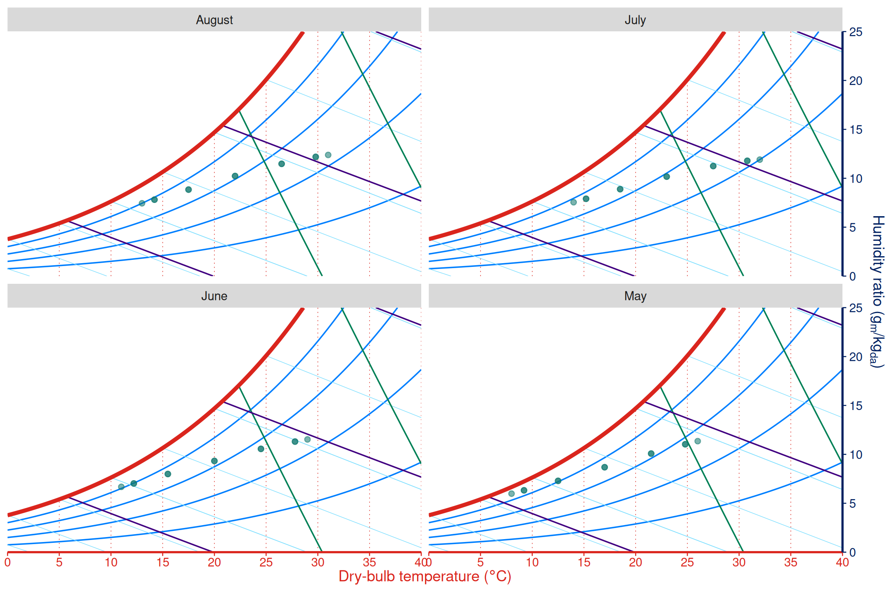
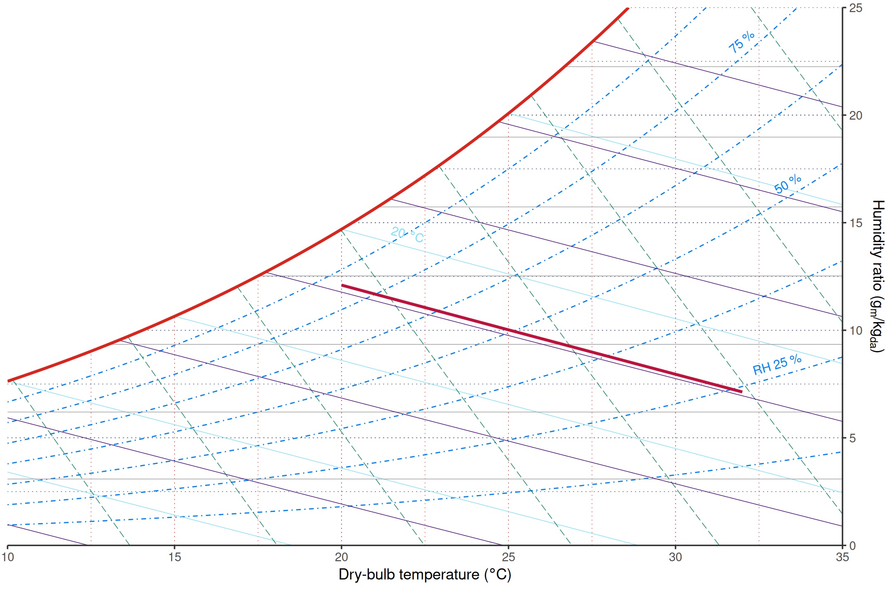
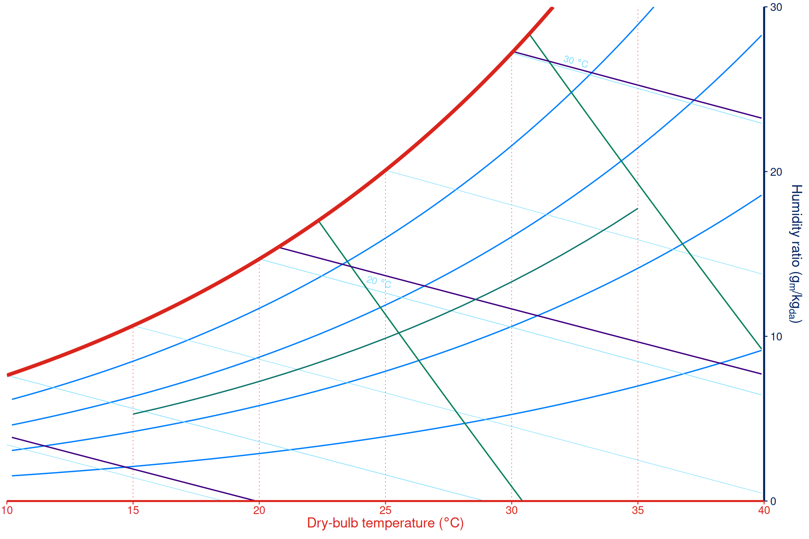
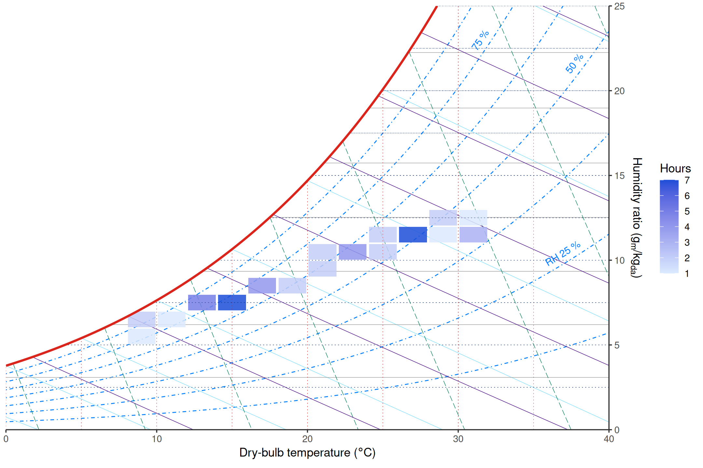
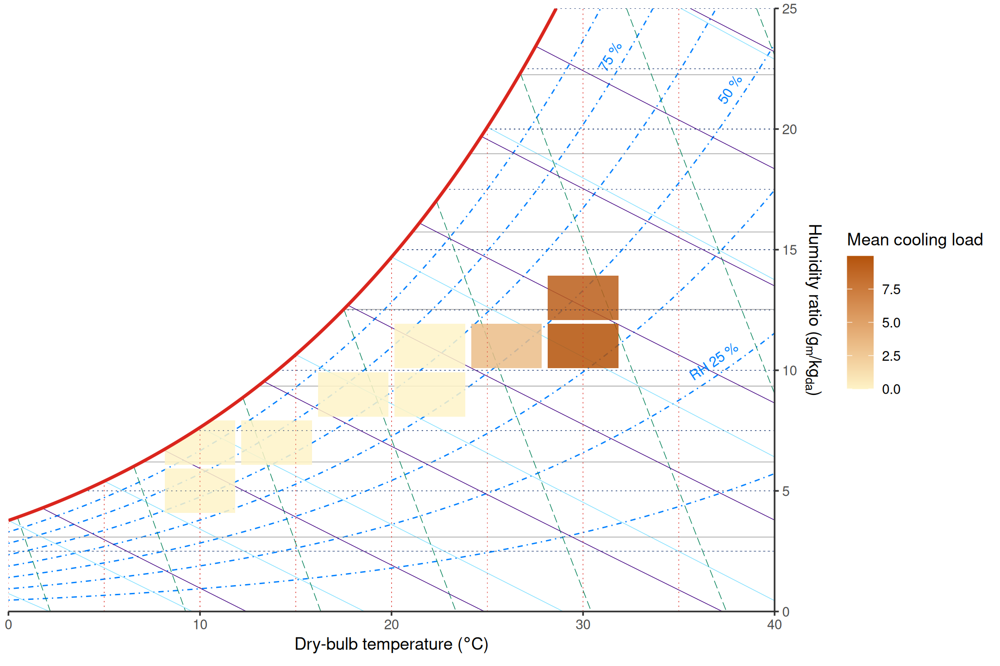

Psychrometric charts place dry-bulb temperature on one axis and humidity ratio on the other. In real data, however, the second state property is often relative humidity, wet-bulb temperature, vapor pressure, specific volume, or enthalpy. ggpsychro provides stats that convert those properties into chart coordinates.
Plot relative humidity data
Use stat = "relhum" with a regular ggplot geom when each
row has dry-bulb temperature and relative humidity. Relative humidity
values are supplied as percent values.
weather <- data.frame(
month = rep(c("May", "June", "July", "August"), each = 12),
hour = rep(seq(0, 22, by = 2), times = 4)
)
weather$dry_bulb_temperature <- 16 +
rep(c(1, 4, 7, 6), each = 12) +
9 * sin((weather$hour - 6) / 24 * 2 * pi)
weather$relative_humidity <- 72 -
rep(c(0, 8, 14, 10), each = 12) -
18 * sin((weather$hour - 6) / 24 * 2 * pi)
weather$relative_humidity <- pmax(30, pmin(95, weather$relative_humidity))
ggpsychro(weather, tdb_lim = c(0, 40), hum_lim = c(0, 25)) +
psychro_preset("minimal") +
geom_point(
aes(dry_bulb_temperature, relhum = relative_humidity),
stat = "relhum",
color = "#0f766e",
alpha = 0.55,
size = 1.6
) +
facet_wrap(~month)
Draw constant-property lines
The same stats can be used with line geoms. This is useful for adding calculated reference lines or overlays from data.
ggpsychro(tdb_lim = c(10, 35), hum_lim = c(0, 25)) +
geom_grid_relhum() +
geom_grid_wetbulb() +
geom_line(
aes(x = 20:32, wetbulb = 18),
stat = "wetbulb",
color = "#be123c",
linewidth = 1
)
Available stats
The property-specific stats are:
| Stat | Required property aesthetic |
|---|---|
stat_relhum() |
relhum |
stat_wetbulb() |
wetbulb |
stat_vappres() |
vappres |
stat_specvol() |
specvol |
stat_enthalpy() |
enthalpy |
Each stat also needs dry-bulb temperature through x.
When used inside a ggpsychro() plot, units and pressure are
inherited from the parent chart.
line_data <- data.frame(tdb = seq(15, 35, by = 1))
ggpsychro(tdb_lim = c(10, 40), hum_lim = c(0, 30)) +
psychro_preset("minimal") +
geom_line(
aes(x = tdb, relhum = 50),
data = line_data,
stat = "relhum",
color = "#0f766e"
) +
geom_line(
aes(x = tdb, wetbulb = 18),
data = line_data,
stat = "wetbulb",
color = "#be123c"
)
#> Warning: Computation failed in `stat_wetbulb()`.
#> Caused by error in `GetHumRatioFromTWetBulb()`:
#> ! Wet bulb temperature is above dry bulb temperature
Summarize observations as tiles
Hourly weather and simulation outputs can be summarized as
psychrometric tiles. geom_psychro_tile() bins observations
on dry-bulb temperature and humidity ratio coordinates. It accepts
either humidity ratio through y or relative humidity
through relhum, and exposes after_stat(hours)
for distribution plots.
weather$cooling_load <- pmax(0, weather$dry_bulb_temperature - 24) * 1.5
ggpsychro(weather, tdb_lim = c(0, 40), hum_lim = c(0, 25)) +
geom_grid_relhum() +
geom_psychro_tile(
aes(
dry_bulb_temperature,
relhum = relative_humidity,
fill = after_stat(hours)
),
binwidth = c(2, 1)
) +
scale_fill_gradient("Hours", low = "#dbeafe", high = "#1d4ed8")
The same bins can aggregate another metric with the
value aesthetic and fun.
ggpsychro(weather, tdb_lim = c(0, 40), hum_lim = c(0, 25)) +
geom_grid_relhum() +
geom_psychro_tile(
aes(
dry_bulb_temperature,
relhum = relative_humidity,
value = cooling_load,
fill = after_stat(value)
),
binwidth = c(4, 2),
fun = "mean"
) +
scale_fill_gradient("Mean cooling load", low = "#fef3c7", high = "#b45309")
For model-based thermal comfort overlays, see Comfort overlays. For manual state points, process lines, and zones, see Zones and processes.